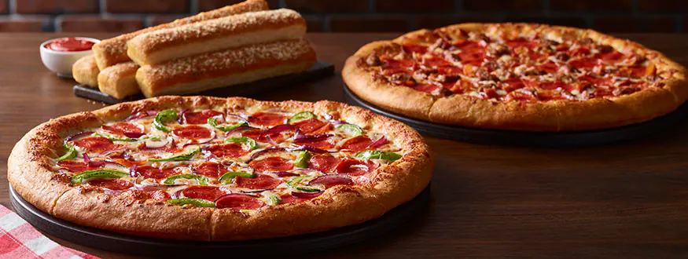

Pizza Recipe

Description
A delicious pizza has a crispy, golden crust and melted cheese balanced with sweet tomato sauce. Toppings like fresh mozzarella, basil, sausage, and pepperoni create a harmonious bite. Every bite is a burst of flavor that satisfies both hunger and taste buds. It's a satisfying choice for any meal or snack.
Ingredients
Crust:
- 1 1/2 cups all-purpose flour
- 1 teaspoon active dry yeast
- 1/2 teaspoon salt
- 1 teaspoon sugar
- 2 tablespoons olive oil
Toppings:
- 1/2 cup tomato sauce
- 1 cup shredded mozzarella cheese
- Optional toppings (fresh basil leaves, cooked sausage, pepperoni, sliced mushrooms, diced onions, etc.)
Steps:
- Prepare the crust: In a large bowl, whisk together 1 1/2 cups of all-purpose flour, 1 teaspoon of active dry yeast, 1/2 teaspoon of salt, and 1 teaspoon of sugar. Add 2 tablespoons of olive oil and enough warm water (about 1/2 cup) to form a soft dough. Knead the dough on a floured surface for about 5 minutes until smooth. Place the dough in a greased bowl, cover with plastic wrap, and let it rise in a warm place for about an hour.
- Preheat the oven: Preheat the oven to 425°F (220°C) and place a pizza stone or baking sheet inside to heat up.
- Roll out the dough: Dust a clean surface with flour and place the dough on top. Use a rolling pin or your hands to shape the dough into a 9-inch circle.
- Add the toppings: Place the dough on a piece of parchment paper or a floured pizza peel. Spread 1/2 cup of tomato sauce evenly over the crust, leaving about 1/2 inch of crust around the edges. Sprinkle 1 cup of shredded mozzarella cheese over the sauce and add any optional toppings you like.
- Bake the pizza: Carefully slide the pizza onto the preheated pizza stone or baking sheet in the oven. Bake for 12-15 minutes, or until the crust is golden brown and the cheese is melted and bubbly.
- Serve and enjoy: Remove the pizza from the oven and let it cool for a few minutes. Slice and serve hot. Enjoy your delicious homemade pizza!